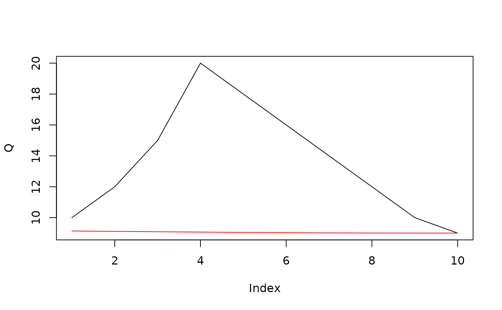

BFS - Baseflow Separation
BFS.RdPerforms baseflow separation from streamflow data using either the Wallingford method or the Lyne & Hollick digital filter approach. The Wallingford method identifies turning points in the hydrograph, while the Lyne & Hollick method applies a recursive digital filter.
Arguments
- Q
Numeric vector of discharge (streamflow) values. Missing values (NA) are allowed.
- d
Integer specifying the window size (in days) for identifying minima in the Wallingford method. Default is 5.
- w
Numeric weighting factor (0-1) used in the Wallingford method to identify turning points. Default is 0.9.
- a
Numeric filter parameter (0-1) for the Lyne & Hollick method, where higher values result in smoother baseflow. Default is 0.925.
- passes
Integer specifying the number of forward/backward passes for the Lyne & Hollick method. Default is 3 (recommended for optimal results).
- method
Character specifying the separation method: "Wal" for Wallingford or "LH" for Lyne & Hollick. Default is "Wal".
Value
A numeric vector of baseflow values corresponding to the input discharge values. Returns NA if the input contains only NA values or if insufficient turning points are found (Wallingford method).
Details
For the Wallingford method (method = "Wal"):
The hydrograph is divided into
d-day segmentsThe minimum flow in each segment is identified
Turning points are identified where w*Qmin < adjacent minima
Baseflow is interpolated between these turning points
For the Lyne & Hollick method (method = "LH"):
Applies a recursive digital filter with parameter
aPerforms multiple forward/backward passes (specified by
passes)The filter equation is: SFi = a*SFi-1 + (1+a)/2 * (Qi-Qi-1)
References
Gustard, A., Bullock, A., & Dixon, J. M. (1992). Low Flow Estimation in the United Kingdom. Institute of Hydrology Report No. 108. Wallingford, UK.
Lyne, V., & Hollick, M. (1979). Stochastic time-variable rainfall-runoff modelling. Institute of Engineers Australia National Conference, 89-93.
See also
approxExtrap for the interpolation function used in the Wallingford method.
Examples
# Load sample streamflow data
Q <- c(10, 12, 15, 20, 18, 16, 14, 12, 10, 9) # Streamflow
# Apply Wallingford method
baseflow_wal <- BFS(Q, method = "Wal")
# Apply Lyne & Hollick method with custom parameters
baseflow_lh <- BFS(Q, method = "LH", a = 0.95, passes = 5)
# Plot results
plot(Q, type = "l")
lines(baseflow_wal, col = "blue")
lines(baseflow_lh, col = "red")
